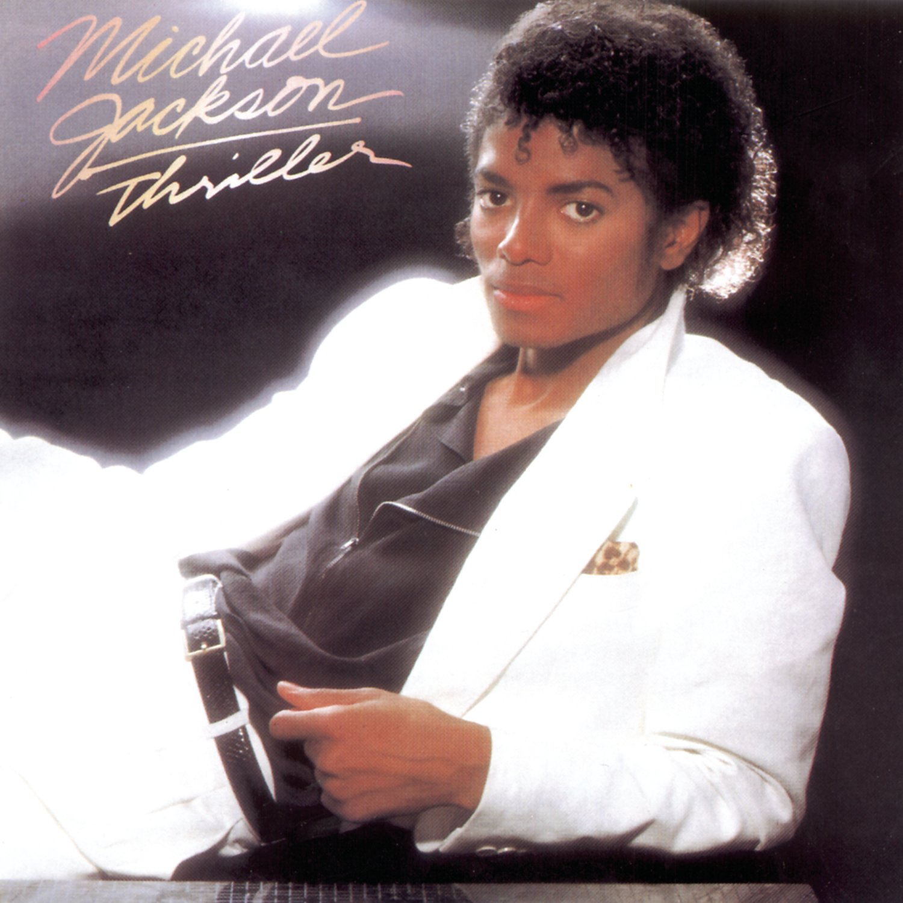
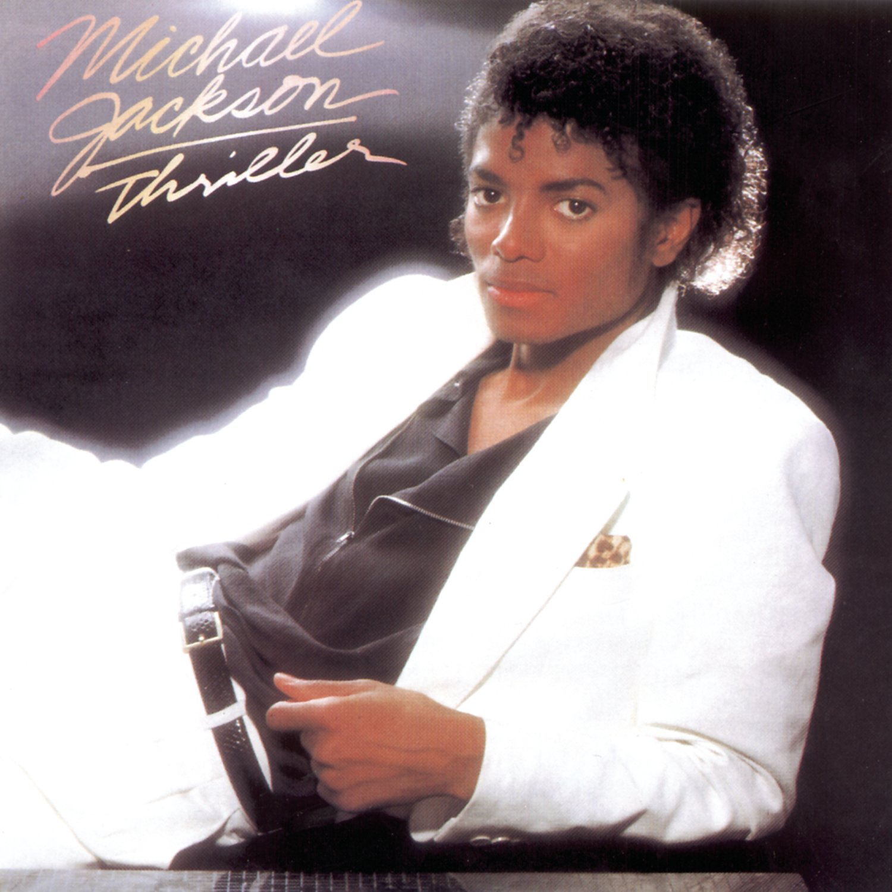
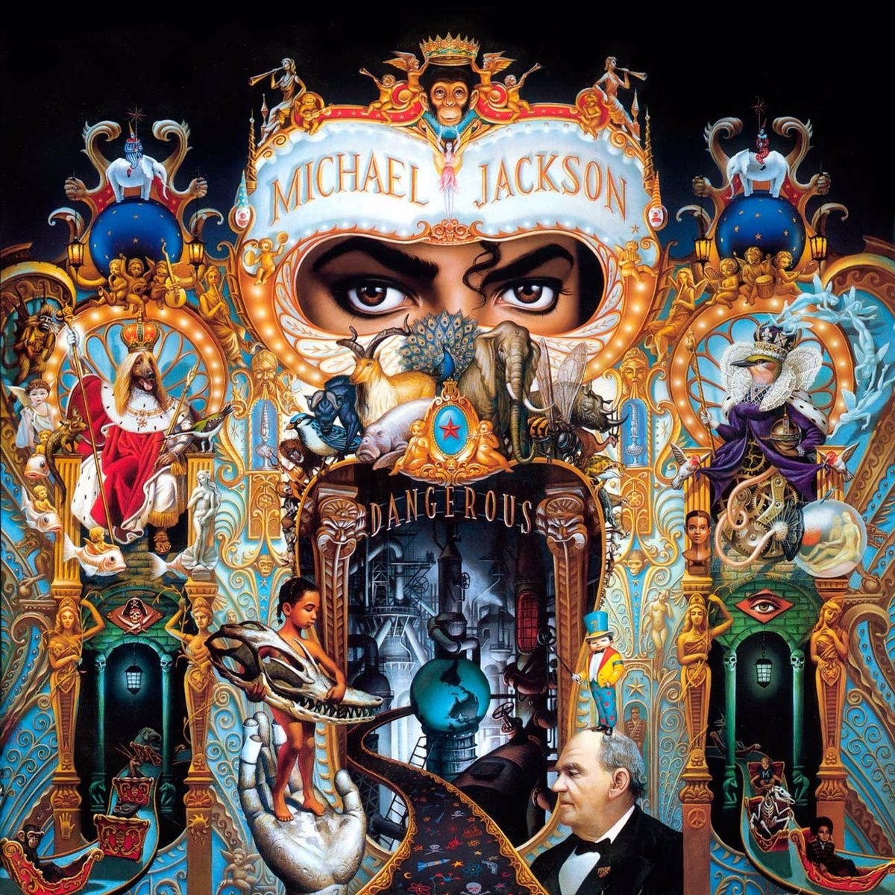
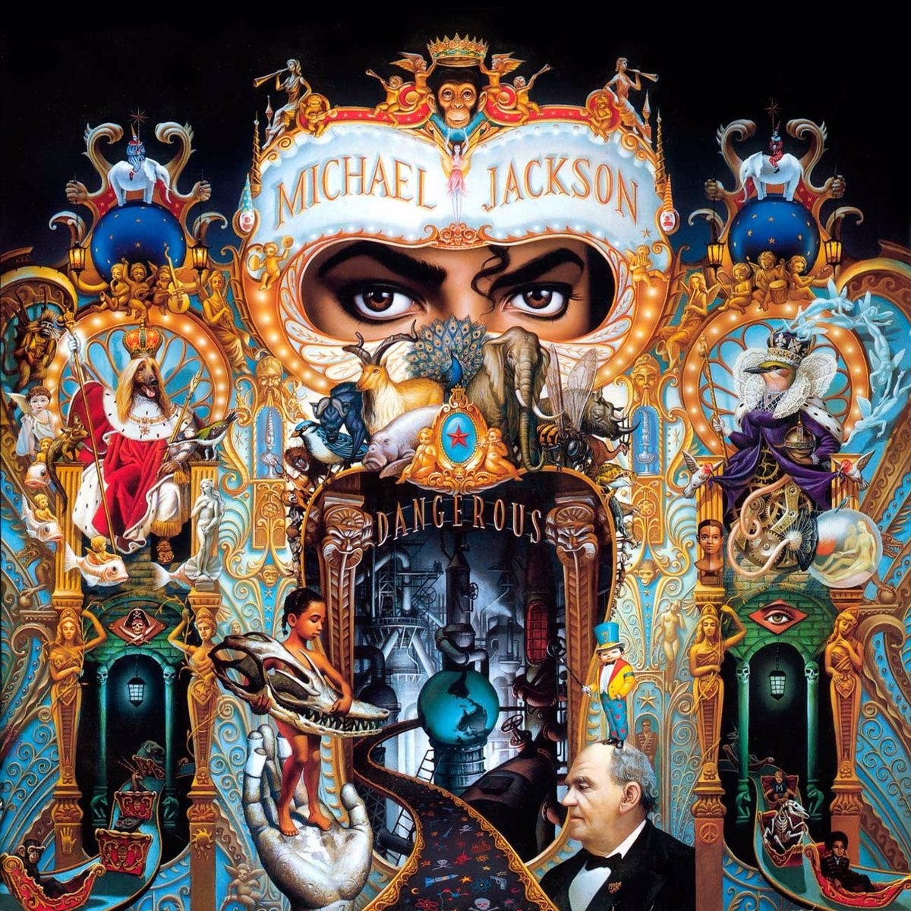

| Álbum |
Fecha de Lanzamiento |
Ventas |
| Got to Be There
Primer álbum de estudio |
24 de enero de 1972 |
3'000.000 |
| Ben
Segundo álbum de estudio |
4 de agosto de 1972 |
3'560.000 |
| Music and Me
Tercer álbum de estudio |
13 de abril de 1973 |
2'000.000 |
| Forever, Michael
Cuarto álbum de estudio |
16 de enero de 1975 |
1'000.000 |
| Off the Wall
Quinto álbum de estudio |
10 de agosto de 1979 |
20'000.000 |
| Thriller
Sexto álbum de estudio |
30 de noviembre de 1982 |
65'000.000 |
| Bad
Séptimo álbum de estudio |
31 de agosto de 1987 |
35'000.000 |
| Dangerous
Octavo álbum de estudio |
26 de noviembre de 1991 |
32'000.000 |
| HIStory: Past, Present and Future - Book I
Noveno álbum de estudio |
16 de junio de 1995 |
20'000.000 |
| Blood on the Dance Floor: HIStory in the Mix
Décimo álbum de estudio |
20 de mayo de 1997 |
6'000.000 |
| Invincible
Undécimo álbum de estudio |
30 de octubre de 2001 |
8'000.000 |


 

 
